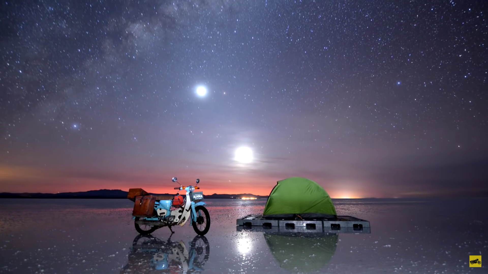

Las estrellas son cuerpos celestes gigantes, compuestos principalmente por hidrógeno y helio, que producen luz y calor desde sus arremolinadas fundiciones nucleares. Aparte del Sol, todos los puntos luminosos que vemos en el cielo se encuentran a años luz de la Tierra. Las estrellas son los bloques de construcción de las galaxias, y existen mil millones en el universo. Es imposible saber cuántas estrellas hay, pero los astrónomos calculan que solo en la galaxia de la Vía Láctea hay aproximadamente 300 mil millones.
El ciclo de vida de una estrella dura mil millones de años. En general, mientras más grande sea una estrella, más corto es su tiempo de vida. El nacimiento de una estrella ocurre dentro de las nebulosas, que son nubes de polvo constituidas por hidrógeno. A lo largo de miles de años, la gravedad provoca que las cavidades de materia densa dentro de la nebulosa colapsen bajo su propio peso. Una de estas masas de gas que se contrae, denominada protoestrella, representa la etapa naciente de la estrella. Debido a que el polvo de las nebulosas las oculta, las protoestrellas son difíciles de detectar.
Algunas estrellas brillan más que otras. Su brillo es un factor que depende de cuánta energía irradien (es decir, su luminosidad) y de cuán lejos de la Tierra se encuentren. El color de las estrellas también puede variar, porque su temperatura no es siempre la misma. Las estrellas más calientes son blancas o azules, mientras que las más frías son de tonos naranjas o rojos. Al graficar estas y otras variables en un esquema que se denomina diagrama de Hertzsprung-Russell, los astrónomos pueden clasificar las estrellas en grupos. Además de las estrellas de secuencia principal y las enanas blancas, podemos mencionar otros grupos, como las estrellas enanas, las gigantes y las supergigantes. Las supergigantes pueden llegar a tener un radio mil veces mayor al del mismísimo Sol. El 90 por ciento del tiempo de vida de las estrellas transcurre en la fase de secuencia principal. El Sol terrestre, de unos 4,6 mil millones de años de antigüedad, es una estrella enana amarilla de tamaño promedio; y los astrónomos prevén que continuará en la fase de secuencia principal por algunos miles de millones de años más. A medida que avanza la vida de las estrellas hacia el final, gran parte de su hidrógeno se convierte en helio. El helio desciende hacia el núcleo de la estrella, aumentando su temperatura y provocando que su capa externa de gases calientes se expanda. Estas estrellas inmensas y expansivas se denominan gigantes rojas. Hay muchas formas en las que la vida de una estrella puede finalizar, y su destino depende de cuán gigante sea.